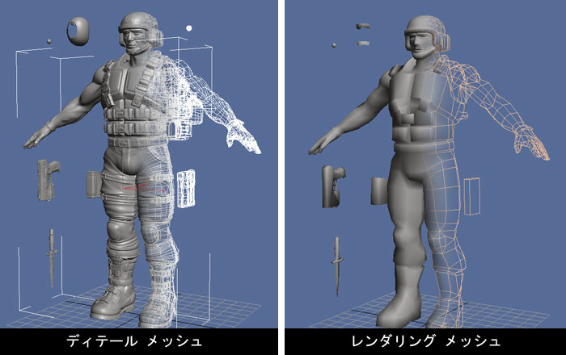
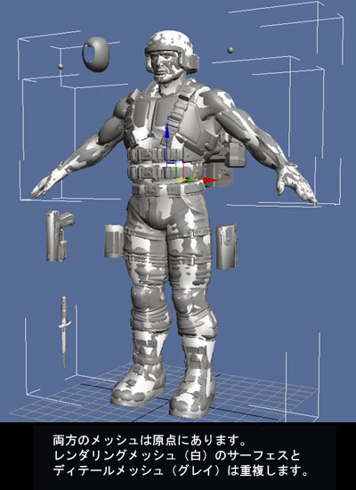
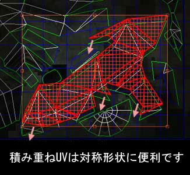

UDN
Search public documentation:
ImportingSkeletalMeshTutorialJP
English Translation
中国翻译
한국어
Interested in the Unreal Engine?
Visit the Unreal Technology site.
Looking for jobs and company info?
Check out the Epic games site.
Questions about support via UDN?
Contact the UDN Staff
中国翻译
한국어
Interested in the Unreal Engine?
Visit the Unreal Technology site.
Looking for jobs and company info?
Check out the Epic games site.
Questions about support via UDN?
Contact the UDN Staff
SkeletalMesh? のインポートのチュートリアル
ドキュメントの概要:UnrealEngine3 にアニメーションやアニメーションを導入するためのチュートリアル。 ドキュメントの変更ログ: Chris Sturgill により作成 (Demiurge Studios?)。 Laurent Delayen により更新。はじめに
本書は、静的メッシュへの適用と同様に、UnrealEngine3 のアートのパイプラインとして作成されました。新しいエンジンに特定の機能や処理過程に焦点をおいています。新しいエンジンで変更のない機能については、UDN の他の文書で詳細に記述されています。リアルタイムの Bump Mapping （バンプマッピング）： ディテール メッシュとレンダリング メッシュ
UnrealEngine3 では、バンプマッピングをリアルタイムで使用する機能が提供されています。この新しいテクノロジーは、新しいモデリングのテクノロジーを必要とします。法線マップは、超高ポリゴンのディテール メッシュからジオメトリの詳細を読み込んで生成されます。このディテールメッシュはリアルタイム状況で実行する必要はなく、法線マップ情報を提供する目的で存在するものです。このため、ポリゴン数への制限が和らぎ、映画のような高画質を実現します。
生成された法線マップは、UE3 内で低ポリのレンダリングのメッシュに適用されます。この結果、実際のポリゴン以上に複雑な表現のメッシュが出来上がります。レンダリングメッシュは、実際の処理ではリグ、アニメーション、の後に UE3 へのエクスポートされます。エクスポート用にコンテンツを準備する
この時点でディテール メッシュとレンダリング メッシュがスペース内の同じ点に存在するはずです（原点と思われます）。レンダリング メッシュはアンラップされ、UV がレイアウトされています。
レンダリング メッシュのアンラップを前提に SHTools のプロセスが進められるため、このことは重要となります。これは新しいバージョンの 3D Studio Max でも行うことができます。UV についての簡単な説明
法線マッピングのプロセスでは、アンラップに特に注力する必要があります。最善の結果のため、UV がオーバーラップしないようご注意下さい。ジオメトリが同一である場合はUVを重ねることができます。つまり、次のイメージのように、メッシュの別の部分がオーバーラップすることは望ましくないということです。: 下のイメージのように、ミラー関係にあるジオメトリの UV を重ねることは可能です。:
下のイメージのように、ミラー関係にあるジオメトリの UV を重ねることは可能です。:

こういった制限はディテールメッシュには当てはまりません。それは、SHTools のプロセス用にテクスチャ処理する必要がないためです。法線マップの生成
ディテール メッシュから法線マップを生成するプロセスは、SHTools プラグインで処理することも、3DStudio、Max、Maya または Softimage XSI で処理することもできます。このチュートリアルでは、この手順を段階的に紹介します。 SHTools メッシュ プロセッサとサーバーは、Max/Maya/XSI が独自の法線マッピング ツールを提供する前に作成されたものです。当社では、今はこれらのツールを使用して法線マップを作成するのが一般的です。法線マップの作成には、Maya などの 3D モデリングパッケージの使用が強く推奨されています。アニメーション メッシュとアニメーションのエクスポート
メッシュのエクスポートの詳細なプロセスについては、 メッシュのエクスポートのチュートリアル ページにてご覧いただけます。 リグされたレンダリングメッシュとアニメーションのエクスポートに関しては ActorXMaxチュートリアルをご覧ください。 注記:法線マップを SHTools で UE3 にエクスポートする (上記にて記載されています) 事は現時点でサポートされていません。しかし、アニメーションのパイプラインに変更がないため、現状 Maya からのアニメーションのエクスポートはサポートされており、次のサイトで詳細説明をご覧頂けます。 ActorXMayaチュートリアルエンジンへのコンテンツ取り込み
すべてがエクスポートされ準備ができたので、Unreal Editorでアセットをエンジンに取り込みます。 メッシュのインポートの詳細なプロセスについては、 メッシュのインポートのチュートリアル ページにてご覧いただけます。 Generic ブラウザと新しいパッケージシステムについての詳細は、 Generic ブラウザ参照 および Unreal パッケージ をご覧ください。 テクスチャのインポート、マテリアルの作成については、 マテリアルのチュートリアル をご覧ください。スケルトンのインポート
UnrealEngine へのPSKファイルのインポートについての情報は ActorXJP ページをご覧ください。アニメーションのインポート
UnrealEngine3 のアニメーション PSA ファイルのインポートに関しては次のサイト アニメーションシステムを使う をご覧下さい。Skeletal Mesh アクタの使用
レベルへのSkeletal Mesh アクタの配置のプロセスは非常に簡単です。- Generic Browser でSkeletalMesh を選択します。
- レベルで右クリックをし、 'Add Actor'(アクタを追加)へ行き、 'Add SkeletalMesh'(SkeletalMesh'を追加)を選択します。これでレベルにメッシュが見えます。
役に立つコンソールコマンド
show bones - 骨格メッシュをレンダーするのに使われたボーンの位置を表示します。
役に立つコマンドについては コンソールコマンド ページをご覧ください。